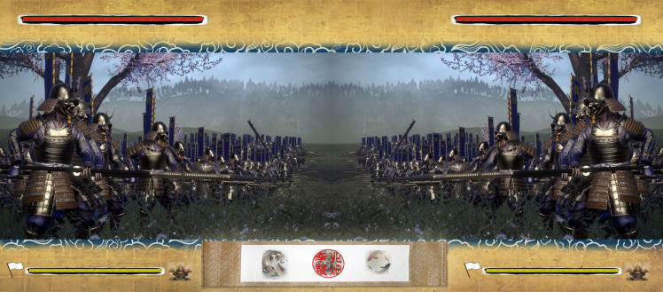
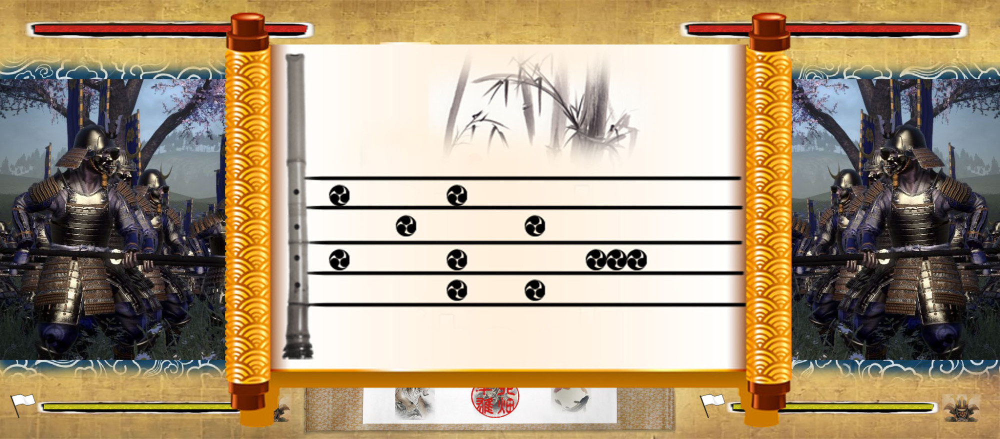
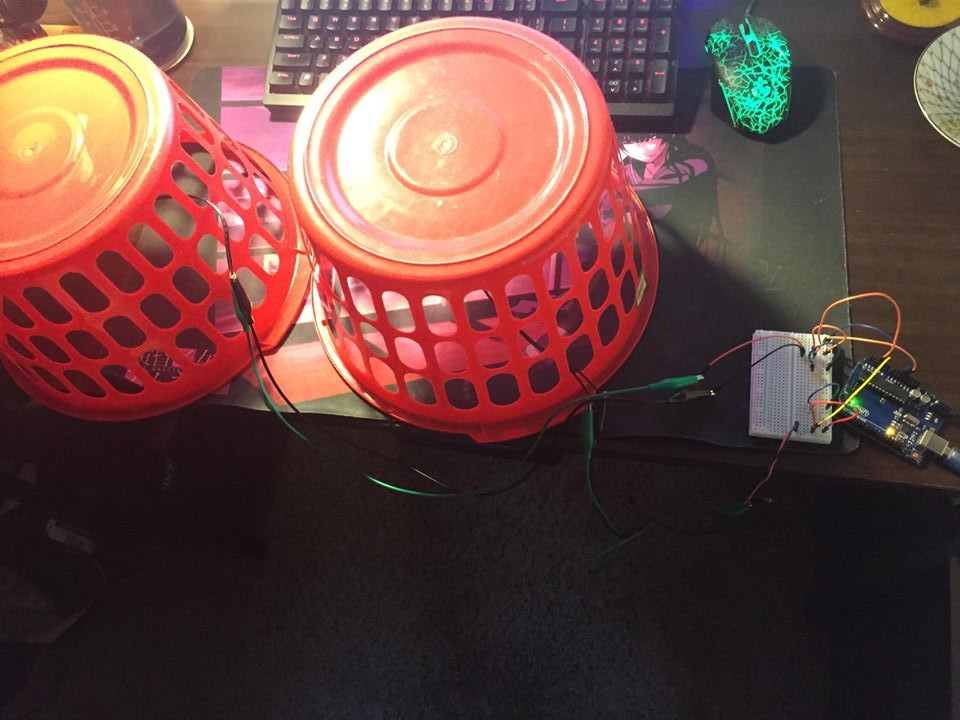
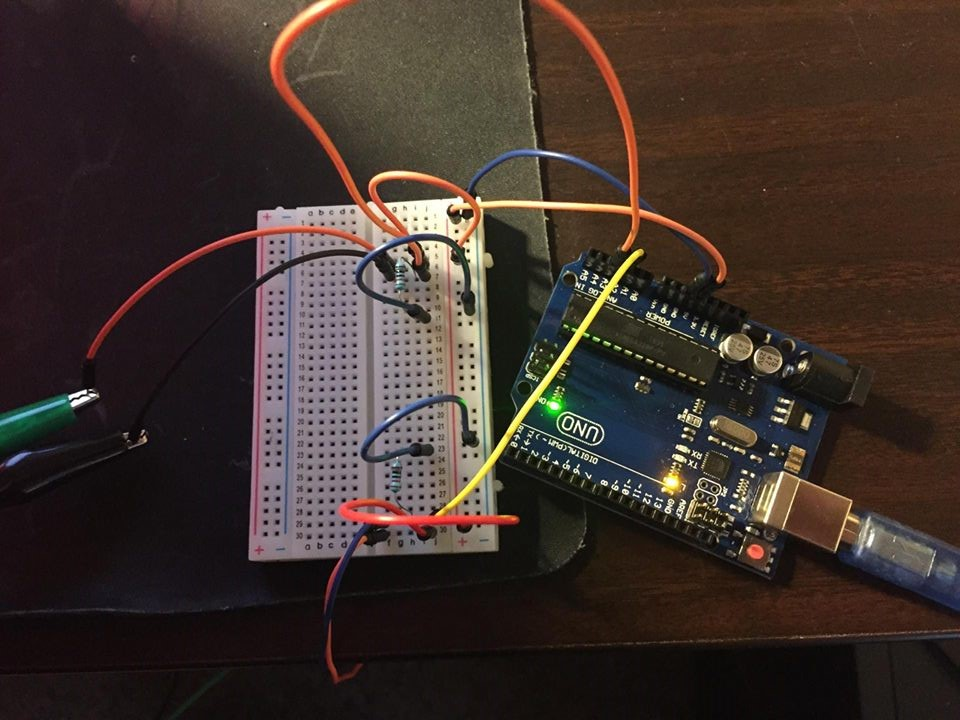
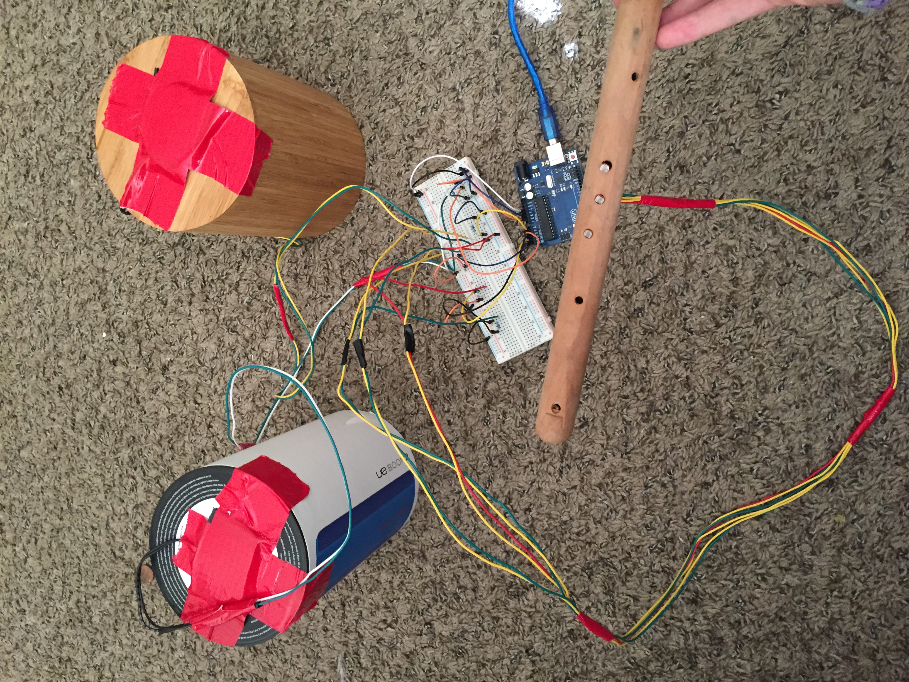
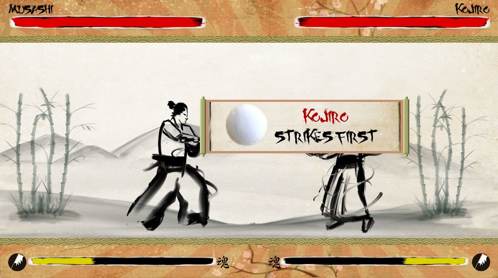

Sengoku Rhythm
Overview
Sengoku Rhythm is a rhythm game where two players fight an honorable Samurai duel by taking turns playing a Taiko and Shakuhachi. The taiko and shakuhachi are simulated using alternative controllers to play the corresponding notes on the screen scrolling from the right. Warriors will play a series of beats in the form of tomoe symbols to deal damage to the opposing warrior. If a warrior plays all the notes correctly, the player will gain a morale boost and deal damage based on how much morale they currently have. On the other hand if the player misses a note or a couple of notes, the player will lose morale based on how much they missed and deal damage based on the newly decreased morale. To win the duel, the player with the lowest health will lose either at the end of the song or when their health is below zero.
- Platform: PC
- Engine/Languages: Processing (Java), Arduino (C++)
- Development Time: 3 months
- Year of Completion: 2017
- Team Size: 2
- Role: Gameplay Engineer
Prototype
The two images below were the first concept prototype. The idea was that there would be two opposing sides with their own respective health and morale bar. Each player would take turns playing an instrument and hit the corresponding notes that would move from right to left. This was pitched to a number of people and the project was able to acquire an artist to immediately progress and start working on the alpha build.
 Alternative Controllers
To create the Taiko (drums), Arduino and Piezo discs were used to detect vibrations/hits from the player. Plastic baskets were used to imitate the drums and the discs were inserted under the basket where the player will hit the drum. Even though the plastic drums were not ideal, players were able to hit the drum and it would detect the player's action. Confident that our prototype works, we moved on with development to fully implement the game along with one more instrument.
 In addition to the drums, the shakuhachi was also rapidly developed so that the players had to swap back and forth between the two instruments in combat. The flute used photoresistors (light detectors) to imitate the fingers covering the holes of the flute. The photoresistors were placed in each of the flute's holes and when the fingers were on top of the photoresistors, that was deemed as an input and it would hit the corresponding notes that came up.
Result
All the way up to the final build, we focused our efforts on the player experience. We listened to a lot of feedback on our game and as we thought the plastic baskets were very finicky so it was decided the drums had to be improved upon. Although we would have loved to use very realistic rubber taiko drums or even real taiko drums, we were on a tight budget so we had to improvise. In the end, we found out that a metal tea canister and a wooden kitchen tool holder had the best results with our sensors. The art came in very rapidly and the artist on the team made tons of great art to the game to give it a nice polished look, replacing the classic programmer art, so that it was in a style that reflected traditional Japanese ink paintings.
